🎭 Lập Trình Chatbot “Trap Girl” Trên Facebook Messenger 🎭
👋 Xin chào!
Mình là Nguyễn Hoàng Thế Vĩ, và hôm nay mình sẽ hướng dẫn các bạn cách tạo một con chatbot giả làm trap girl để chạy trên tài khoản Facebook Messenger với chương trình AutomaticFB. Mục đích? Để troll mấy anh trai trên Chatvn 😈.
🛠️ Bước 1: Tạo tài khoản Facebook clone
Bỏ qua bước này nếu bạn đã có acc Facebook muốn chạy.
Đầu tiên, mình cần một tài khoản Facebook clone. Để tránh bị dính checkpoint, mình sẽ đăng ký tài khoản bằng email ảo từ IncognitoMail.
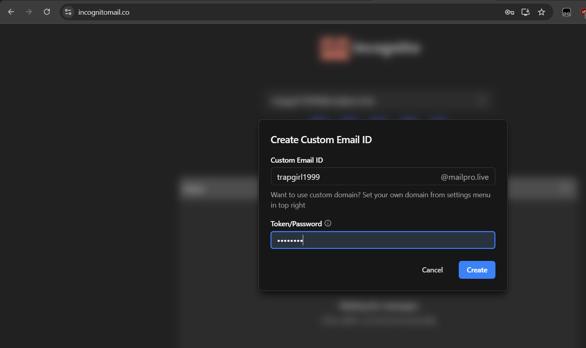
Mình sử dụng ứng dụng Facebook trên điện thoại để tạo tài khoản. Tên tài khoản: Trần Thanh Mai. Một cái tên cực kỳ thơ mộng và đáng yêu. 😆
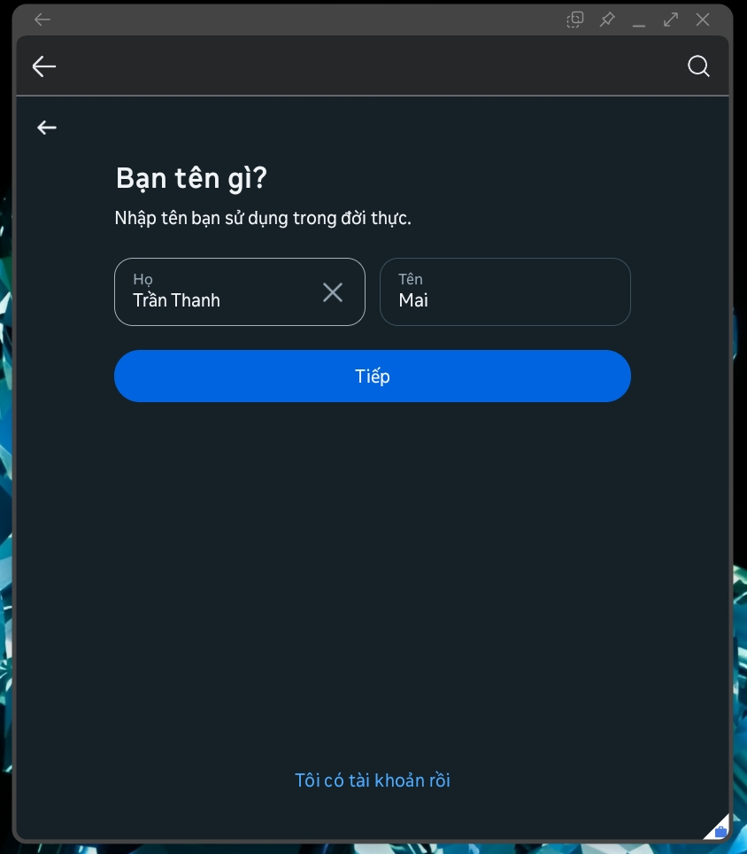
Sau khi đăng ký, Facebook yêu cầu xác minh tài khoản. Mình quay lại IncognitoMail để lấy mã xác nhận.
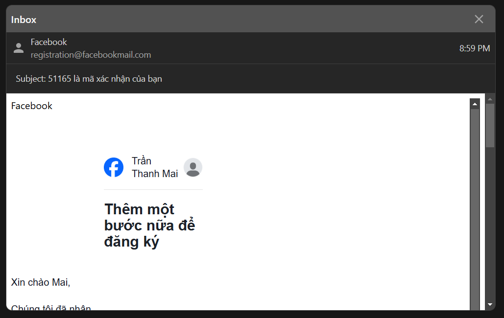
Tài khoản đã sẵn sàng! Giờ mình chọn một ảnh đại diện xinh lung linh để đánh lừa thiên hạ. 🤭
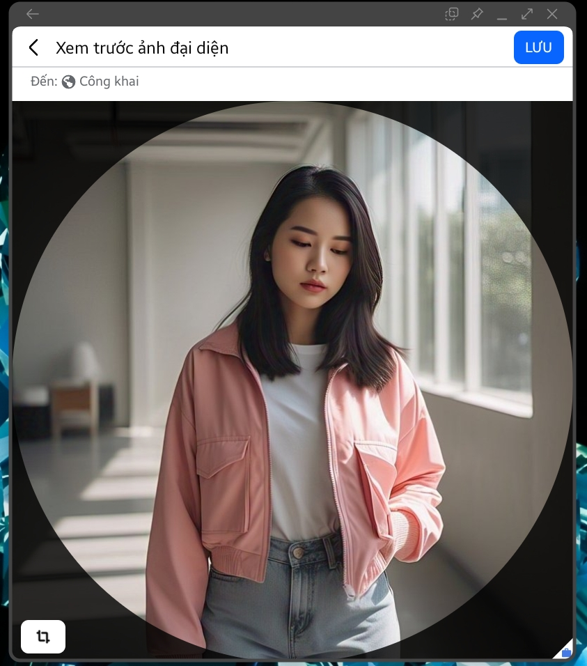
🔒 Bước 2: Thiết lập xác thực hai yếu tố (2FA)
Để sử dụng tài khoản này với GitHub Workflows, mình cần bật Xác thực hai yếu tố (2FA).
Truy cập:
Cài đặt & quyền riêng tư > Xem trong trung tâm điều khiển > Mật khẩu & bảo mật > Xác thực hai yếu tố.
Sau đó, Facebook yêu cầu nhập mật khẩu và mã xác minh:
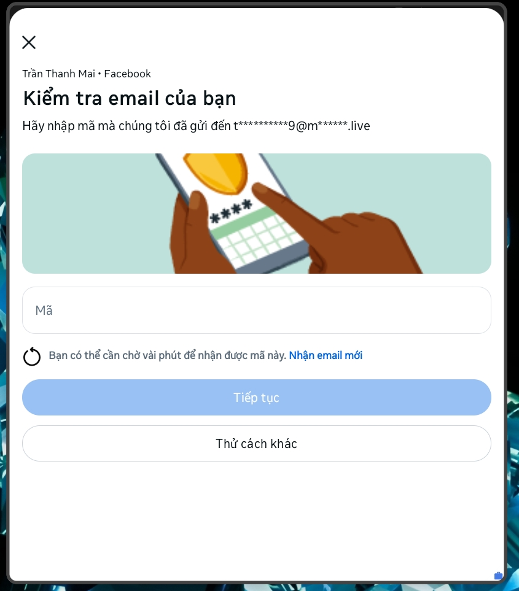
Mình chọn phương thức Ứng dụng xác thực:
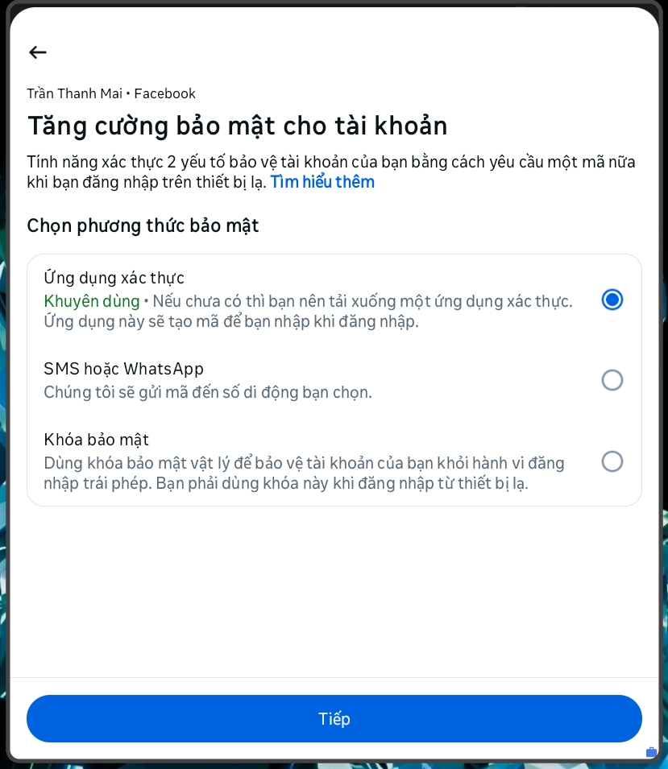
Facebook cung cấp một Secret Key, hãy nhớ kỹ vì nó rất quan trọng! Nhấn Sao chép khóa để lưu lại.
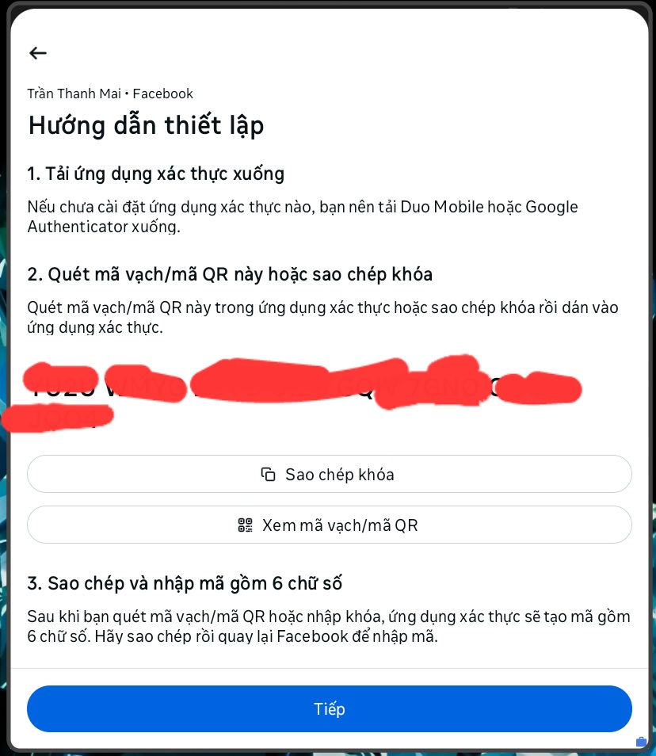
Truy cập totp.app để tạo mã OTP từ Secret Key:
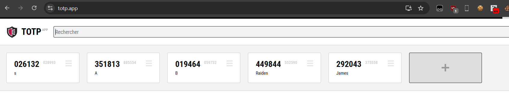
Nhấn nút (+), nhập Secret Key và đặt tên dễ nhớ:
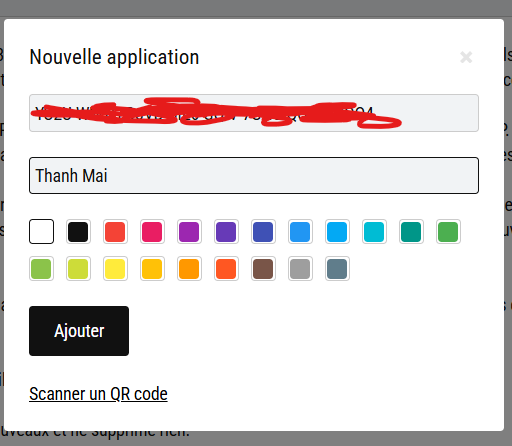
Sau đó, mình sẽ có thể lấy mã OTP từ Secret Key này:
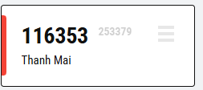
Nhập mã OTP vào ứng dụng Facebook:
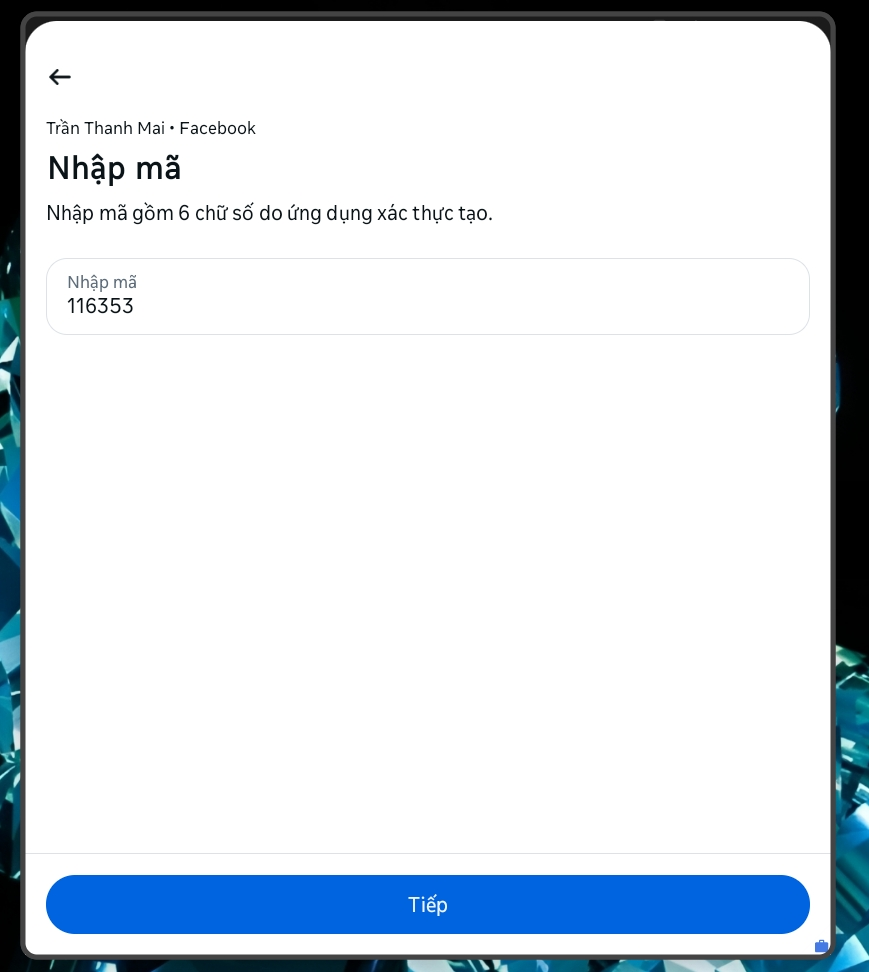
Hoàn tất thiết lập Xác thực hai yếu tố:
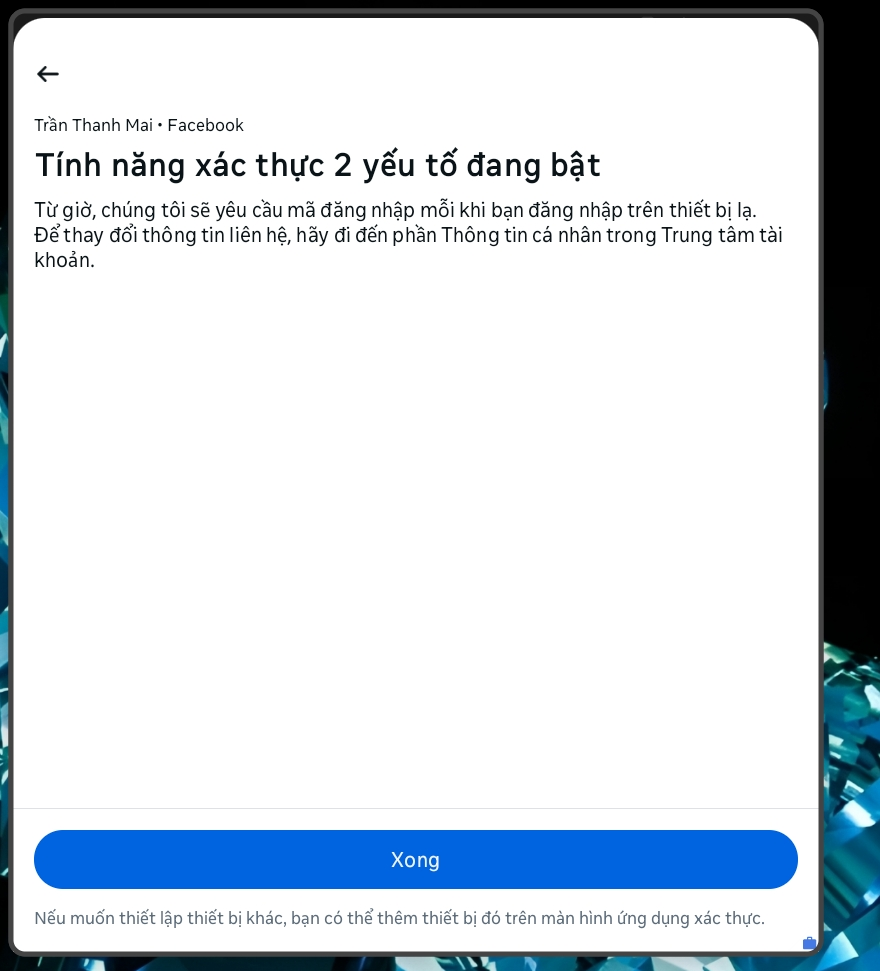
🤖 Bước 3: Chạy chatbot “Trap Girl”
Mình tạo một repo GitHub trống tại GitHub với tên mess4.
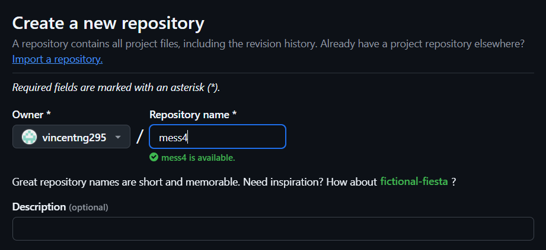
Tiếp theo, mình tạo một file .github/workflows/A.yml trong repo và copy nội dung từ:
👉 vincentng295/gemini_fbchat/.github/workflows/aichat-schedule.yml
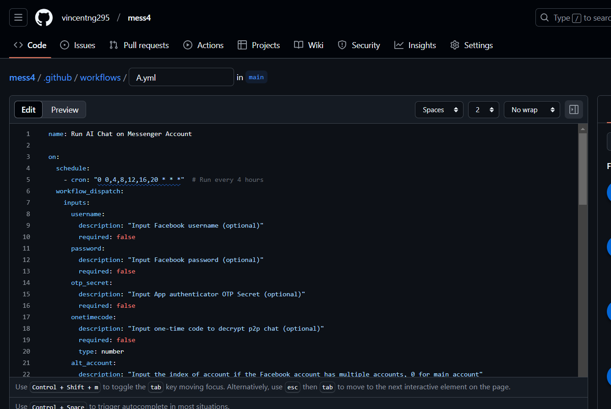
Commit file đó lên repo.
⚙️ Bước 4: Cấu hình GitHub Workflows
Vào Settings > Actions > General, trong phần Workflow permissions, chọn Read and write permissions để GitHub có thể upload file đăng nhập Facebook.
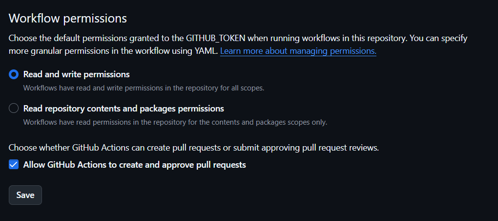
Tiếp theo, vào Settings > Secrets and variables > Actions và thêm hai secret:
PASSWORD: Mật khẩu để giải mã các tệp mã hóa, bạn tự đặt nhéGENKEY: Google Developer API key để sử dụng Gemini AI
Cách lấy Gemini API KEY:

⚙️ Bước 5: Chạy Github Workflows
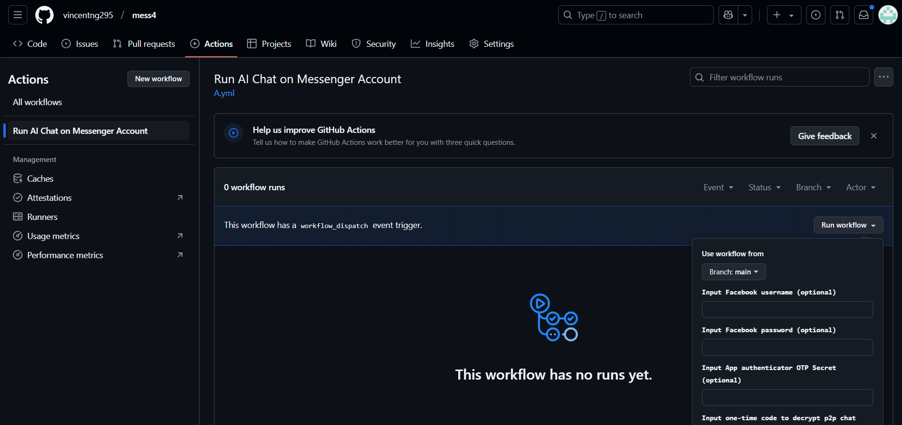
🔑 Nhập các thông tin cần thiết:
- Thông tin đăng nhập Facebook (username, password, secret code, mã giải mã cuộc trò chuyện đầu cuối).
- Bỏ qua tường cookies (nếu không biết là gì, cứ để mặc định).
🎭 Cấu hình persona introduction để thiết lập tính cách và cách trả lời của con bot. Ở đây mình đặt:
⚙️ Cấu hình tùy chọn (Options):
Giải thích chi tiết:
-
aichat_nobye, aichat_byemsg=pp- Vô hiệu hóa hiệu lực command "bye" của bot và yêu cầu bot gửi tin nhắn
pp
- Vô hiệu hóa hiệu lực command "bye" của bot và yêu cầu bot gửi tin nhắn
-
aichat_chatvn_resetmsg=start- Khi bộ nhớ cuộc trò chuyện được reset, bot sẽ gửi tin nhắn
"start"để báo hiệu điều đó.
- Khi bộ nhớ cuộc trò chuyện được reset, bot sẽ gửi tin nhắn
-
aichat_chatvn_resetat=Cuộc\s+trò\s+chuyện\s+đã\s+kết\s+thúc- Nếu bot nhận được tin nhắn có nội dung
"Cuộc trò chuyện đã kết thúc", nó sẽ reset cuộc trò chuyện. \s+là regex biểu thị một hoặc nhiều khoảng trắng, cho phép chuỗi khớp ngay cả khi người dùng gõ nhiều khoảng trắng giữa các từ.
- Nếu bot nhận được tin nhắn có nội dung
-
aichat_chatvn_stopat=Cuộc\s+trò\s+chuyện\s+đã\s+kết\s+thúc- Nếu bot nhận được tin nhắn này, nó sẽ dừng cuộc trò chuyện.
-
aichat_chatvn_startmsg=hi- Khi cuộc trò chuyện bắt đầu, bot sẽ gửi tin nhắn
"hi".
- Khi cuộc trò chuyện bắt đầu, bot sẽ gửi tin nhắn
-
aichat_chatvn_startat=Người\s+lạ\s+đã\s+tham\s+gia\s+cuộc\s+trò\s+chuyện- Khi bot nhận được tin nhắn có định dạng
"Người lạ đã tham gia cuộc trò chuyện", nó sẽ bắt đầu cuộc trò chuyện.
- Khi bot nhận được tin nhắn có định dạng
-
aichat_352350744623283_rules=chatvn- Xác định bộ quy tắc áp dụng cho một ID cụ thể (
352350744623283), sử dụng quy tắc"chatvn".
- Xác định bộ quy tắc áp dụng cho một ID cụ thể (
🎉 Hoàn tất!
Mình truy cập fanpage của chatvn / trò chuyện với người lạ và khởi động tìm người lạ:
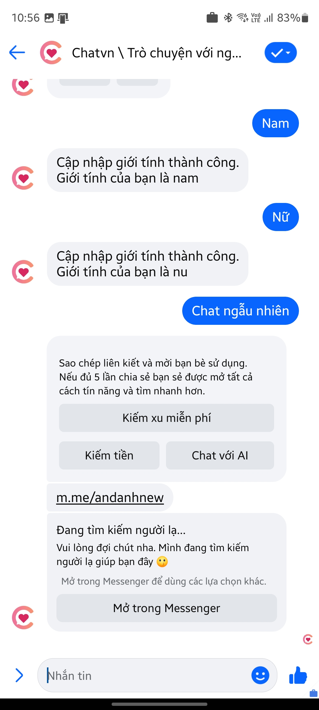
Sau đây là thành quả:
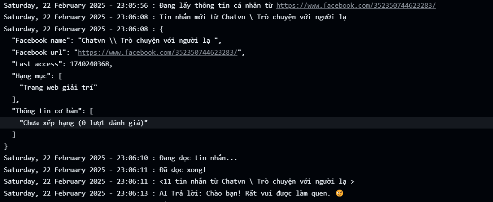
Hình ảnh trên Messenger:

Giờ thì chatbot của mình đã sẵn sàng hoạt động trên Facebook Messenger, sẵn sàng lùa gà mấy anh trai nhẹ dạ cả tin. Chúc các bạn code vui vẻ và troll hiệu quả! 🤣